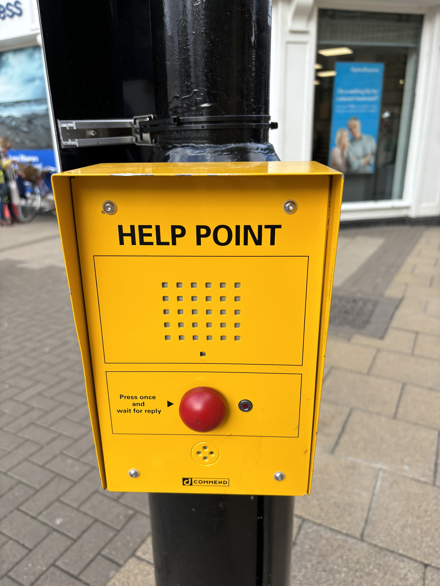
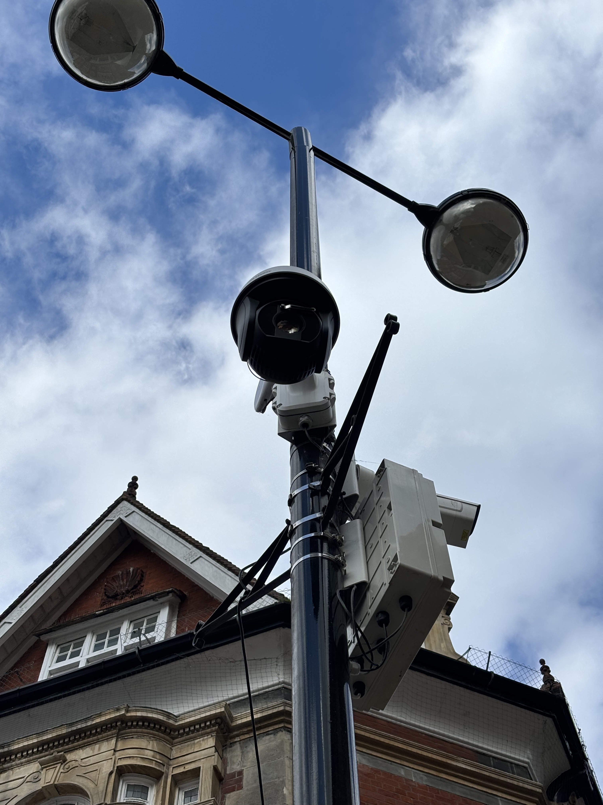
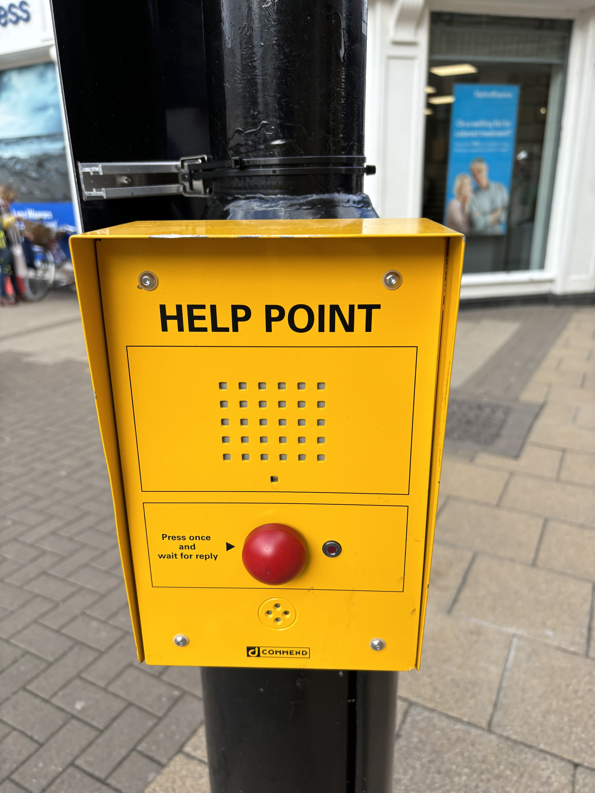
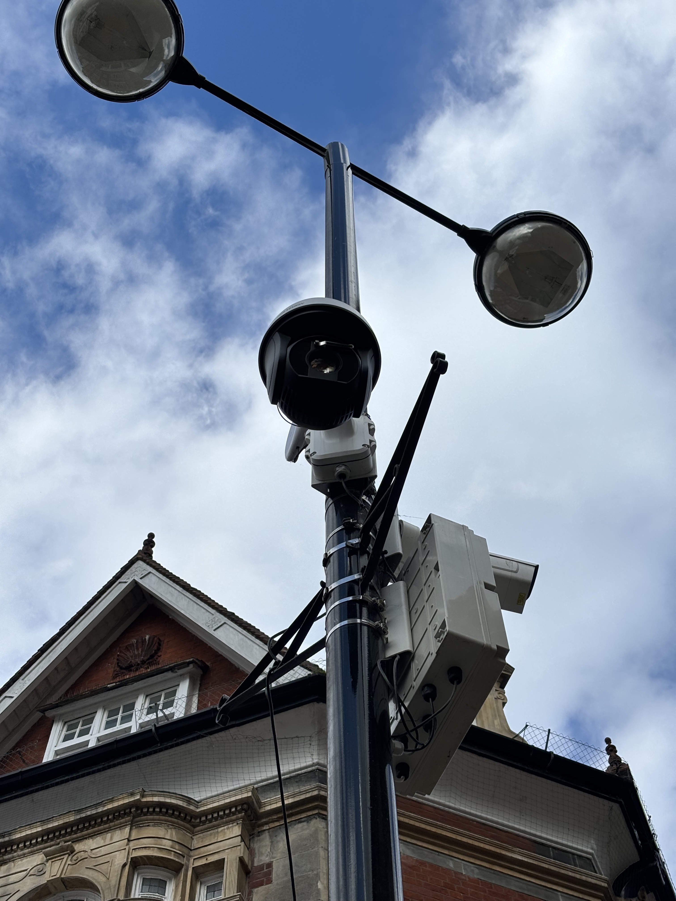

I am a PhD student who should be writing their thesis, instead I am doing this. I should say that I am jsut writing this in Vim on my laptop. So seplling mistakes are an integral part of the process. I hope you will show me grace.
I clearly hate writing my thesis. I know that you are supposed to hate it. But there is something so soul draining about typing out work you did two years ago. I can't wait to do the next thing!
But this is an attempt to distract myself from the horror of non-stop writing and to indulge the slightly interesting things that I find myself runnning into during this writing period:
I had a slightly interesting conversation with JAMIE about the various types of motivation that can drive someone to do something. There are two main types: Intrinsic, and Extrinsic. The first is when the desire to do something comes from an internal source. i.e. I would like to solve a question because I would like to know the answer. Extrinsic, however, is when you are motived by external reward. i.e. I would like to solve a question because I would like a good score.
I am definitley primarily governed by Intrinisic motivation - I can't bare to do something dull. This is playing out to be an issue with the PhD structure. I simply don't think it is possible to be excited about a project that you have worked on for the last 3.5 years (almost exactly!), it is just too well understood to be interesting. There is so much else I could be doing with my time!
Our first deviation. When I started googling "Intrinsic Motivation" I was first shown a wikipedia article on intrinsic motivation as a mechanism in AI (perhaps that tells you something about me) by which the "agent" would exhibit curiosity and explortation. I was surprised by the obvious relationship between AI models and the psychology of motivation. It is an interesting thread. Perhaps if I wasn't spending all my time writing I would tug on it.
By coincindence I do not mean an unlikely similarity. I mean events, periods, people that overlap thoughout history in genuinely interesting ways.
I have heard a few examples of this listed before as fun facts. The two major ones were: Martin Luther King and Anne Frank were born in the same year, and that the end of the Mayan Empire overlapped with the beginning of the University of Oxford (although it seems the collapse of the classical Mayan empire had occured - way less cool without the mega cities). But here are some other interesting ones I found out about. I will update the list if I find any more:
 



For some reason there is this new camera thing in Cambridge's market square. Apparently it is to reduce the anti-social behaviour that happens there. Seemingly, if you are feeling nervous you can hit the big red button and facetime the police. How that helps is not hugely clear to me. I haven't been back to double check recently but this camera is pointed at the "van of death" corner of the square. I hate to say it, but that's not where many people hang out after a boozy night. Perhaps the "van of life" side would be better?

JAMIE and I have long discussed our various abilities in handling spice in it's various forms. When we met MICHAEL he quickly got on board and the spice gauntlet was first conceived. After a few months of not doing it, we decided we should try "doing it". The vast majority of the spices are from bottles etc. Save the Indian and Caribbean contributions - these I cooked myself. Potentially it was this freedom that allowed me to really juice up the caribbean one. This proved to be by far the spiciest and (my) favourite. With cinnamon, the scotch bonnet heat was a warm spice. Not just burning for the sake of burning.
The two major discoveries made during the spice gauntlet are as follows:
| Sauce | Flavour rating | Spice |
|---|---|---|
| Pickled chili | 6/10 | 1/10 |
| Chipotle sauce | 8/10 | 2/10 |
| Original cholula | 8/10 | 3/10 |
| Siracha | 7/10 | 1/10 |
| Tabasco | 4/10 | 5/10 |
| Frank's red hot | 6/10 | 5/10 |
| Buldok | 8.5/10 | 7.5/10 |
| Sichuan | 7.5/10 | 1.5/10 |
| Indian tomato curry | 8.5/10 | 3/10 |
| Caribbean (scotch bonnet) | 9/10 | 8/10 |
Cambridge apple festival went down in the Botanical gardens. GLEN and I went, shilled out a full £5 to check out the joint. Naturally we had to make a mess of the tasting tent. Below are our thoughts. GLEN was tempted to by a bag of the Red Fiesta "for posterity". The price put him off.
After the apple festival we ultimately found our way to the Varisty Hotel rooftop bar where I finally convinced GLEN to join the hoards on instagram. This has proved to be an excellent play on my behalf as GLEN is pumping out quality content like his life depends on it.
| Apple Variety | My rating | GLEN's rating |
|---|---|---|
| Adams Pearmain | 7 | 6 |
| Ananas Reinette | 4 | 7 |
| Blue Pearmain | 8 | 8 |
| Charles Ross | 7 | 7 |
| Egremont Russet | 6 | 6 |
| Falstaff | 8 | 8 |
| Grimes Golden | 5 | 6 |
| Hereford Russet | 8 | 6 |
| Kent | 5 | 5 |
| Kidds Orange Red | 8 | 8 |
| Laxtons Superb | 4 | 4 |
| Princess Russet | 7 | 6 |
| Red Devil | 9 | 9 |
| Red Fiesta | 9.5 | 9.5 |
| Reinette Grise du Canada | 6 | 6 |
| Ribston Pippin | 7 | 6 |
| Rosemary Russet | 8 | 7 |
| William Crump | 7 | 7 |
I have discovered that through the github app i am able to push edits to the website via direct editing of the html. Incredible! The future is mobile and soon I will code in my mind.
If I were to write an unhinged manifesto Kazinski style, I know what it would be railing against. Modern, awful, overhead lighting.
In 2023 a disgruntled cleaner narced on my flat for having candles in our living room. As college property, this was ostensibly not permitted. But as those who have ever lived in ugly buildings know, a candle-lit dinner can sometimes be the only escape. We were told that under no circumstances could we continue to own the candles - for fear we would burn down the building. I remember a "Grade I" being thrown into the mix - NOT an accusation you could levy at Cosin Court. This vague anxiety was not only patently ridiculous, but also profoundly inconsistent as just across the street is a geniunely Grade I listed building which is full of candles every night - the Peterhouse Hall. I was particularly miffed as just weeks before, a fire had broken out in the Fellow's Combination room when a laurel wreath had ignited after a candle had been left unattended. But the Fellows - who had demonstrated themselves as not to be trusted with candles were in the next night living it up with the naked flame. I do not even particularly bemoan the fellows, as I have always been inspired by the choice of the Peterhouse fellowship to reject the wheels of change. As when Lord Kelvin installed electric lights in the Hall, only the Second building in the UK to have electric lights installed. Peterhouse stood alone as the first true bastion of authentic lighting by being the first building to UNINSTALL electric lights. A brave move I wish more poeple would take.
In a paper on the impact of lighting temperature on productivity and mood, the authors conclude that "The effect of colour temperature on mood was most robust and demonstrated more positive affect and less negative affect in warmer lighting." i.e. Warmer lighting improves mood. Coincidentally, the same paper claims that cooler lighting does not impact productivity much at all (although this is definitely not consensus). This is to say that it is consistently found in the literature that warm lighting helps with mood and social interactions. The candle is an obvious candidate, but I would extend this to all warm floor lighting options. The single unailaibale truth is that the big light is NOT A VIBE. I have never been at a party and thought "if only someone turned on that huge bright white light hanging from the ceiling". I have included my lighting vibes visualised to give context. My final word is that you can always turn off the lights. In my current house I can cover the movement sensor with a sock and bring a lamp from my room. Good lighting is always within reach, and thus vibes are under control.
There is this thing called Zipf's law. The assertion is that in writing, there is a relationship between the word usage rank and the frequency with which it is used. i.e. The seond most used word will be used half as often as the most used word. The data follows this equation: y = c / (x + b)**a. It has been observed that this is true for almost all sizable human texts. The bible, the complete works of Shakespeare, and my thesis (so far)!
In 2022 OpenAI released the now famous ChatGPT. It is truly spooky - it can write essays, tweets, and blog posts exactly like a human. At least as far as I can tell. However, it is totally unable to do maths, perhaps it is this numerical incompetence that is the issue... For there is an issue! As far as my cursory test has shown, ChatGPT struggles with Zipf's law! Admittedly, this is only based of a short investigation, but this may be a useful tool to identify AI? I asked Chat GPT to write me a series of essays on various random topics in architecture. After a few prompts I got up to (bizzarely) almost exactly as many words as the latest thesis chapter I had finished. So I compared them like for like. I used a short python script I wrote to genearte the dataset and fit it with the Zipf relation. I would like to highlight the "goodness of fit" for these two datasets (shown below). By eye we can say that the ChatGPT plot is less well fit by the line, but in science, we put numbers to these things. The number I am using is the Chi squared of the dataset. This is simply a measure of how likely is it that the fit is wrong rather than the data just looking that way by chance. Here are the two numbers I found:


That means it is more than 5 times more likely that the ChatGPT essay doesn't follow Zipf's law than my chapter! This is quite a change! This can also be read that if we assume that zipf law must be followed for large peices of text written by humans (but not AI), then the essay written by ChatGPT has 34% chance of not being written by a human. For reference, here are three other manuscripts I tested:
All of which have far lower Chi squared values than the ChatGPT essay. Even the largest - 12 angry men - was a factor of three from the heady heights of the chat. Perhaps the take away is that there are ways of identifying AI works, so if you are tempted to phone it in for an essay... Think again.